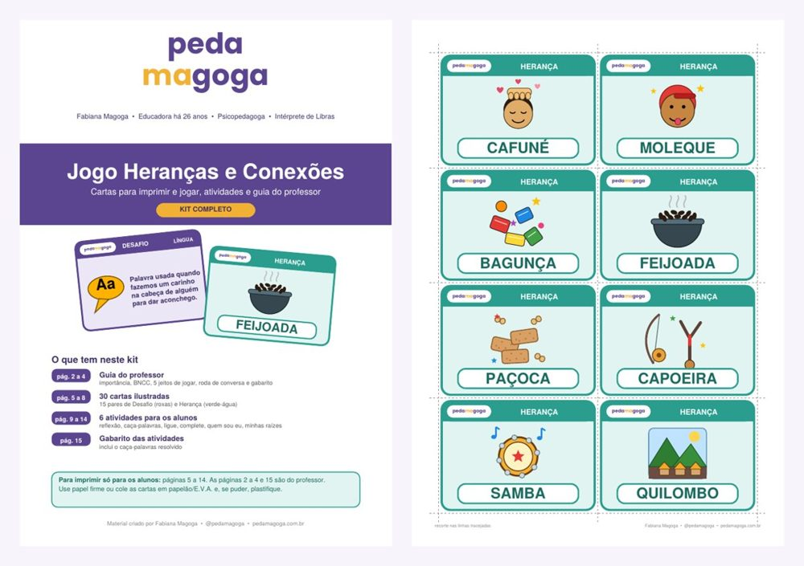

Para o 20 de novembro
[1º ao 5º ano]Turma toda ou gruposPDF para imprimir
Kit completo
Heranças e Conexões
Cafuné, feijoada, capoeira, Dandara: a cultura afro-brasileira que já mora no dia a dia das crianças.
Um jogo de pares em que cada Desafio leva a uma Herança, e cada acerto abre uma roda de conversa sobre língua, culinária, arte, história e valores. Leve, respeitoso e alinhado à Lei 10.639/2003.
30 cartas ilustradas: 15 Desafios e 15 Heranças
5 jeitos de jogar, da turma grande ao kit individual
Perguntas para a roda de conversa, carta por carta
6 atividades: caça-palavras, ligue, complete, quem sou eu e mais
Atividade Minhas Raízes para levar a conversa para casa
BNCC: Língua Portuguesa (EF15LP09, EF15LP10), História (EF04HI10), Arte (EF15AR25) e competências gerais 3 e 9.
R$ 14,90Quero o kit Heranças